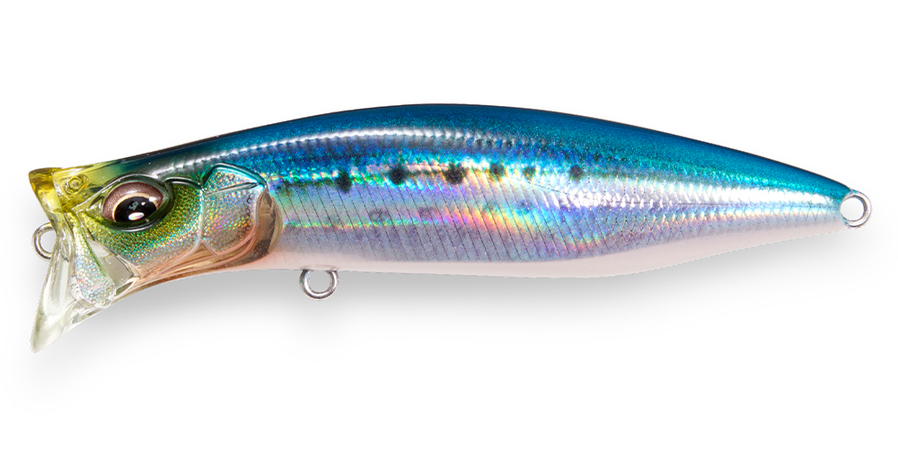
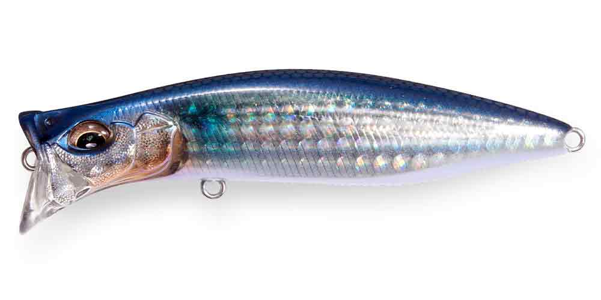
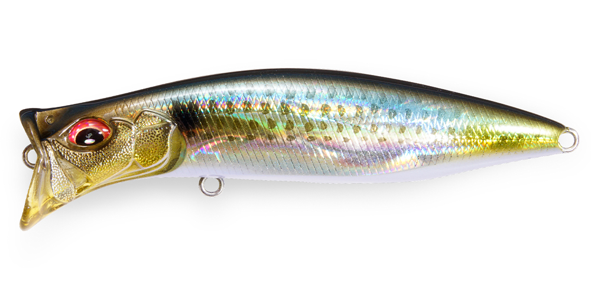
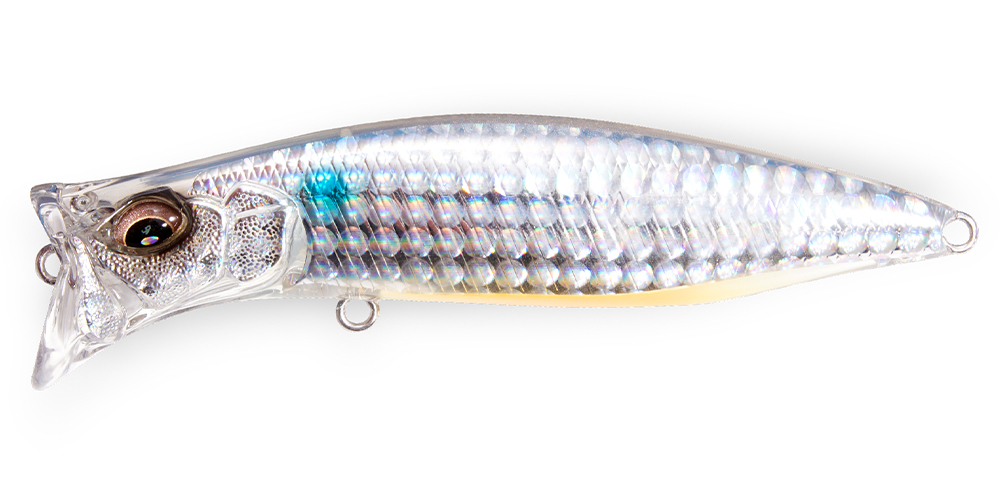

キリンジ90
（KIRINJI 90）
キリンジ90はMegabass（メガバス）のウェイクベイトです。
POPXやPOPMAXのウォータースルー機構（PAT.P）を取り入れたスペシャルウェイクベイトで、「4 INTAKE 4 OUT」構造が水流を自分で調整し、ウルトラハイピッチなロールで泳ぎます。ポッパーとしても使える、ウェイクベイトの“革命児（麒麟児）”です。

画像出典:Megabass公式HP
スペック
- メーカー
- Megabass（メガバス）
- タイプ
- ウェイクベイト（フローティング）
- 全長
- 90mm
- 自重
- 14.5g
- フック
- #4×2
- アクション
- ウルトラハイピッチロール（ウォブンロール）
- ターゲット
- シーバス
- 価格
- 1,800円（税別）
▼今すぐチェック

キリンジ90の特徴
ウォータースルー機構で、どんな速度でも安定して泳ぐウェイクベイト
-
「4 INTAKE 4 OUT」構造
ITOのハイドロダイナミクスによる「4 INTAKE 4 OUT」構造で、アクションを生む水流を自発的に調整。ストレスの少ない軽い巻き心地で、ウルトラハイピッチなロールを出します。
-
超低速から超高速まで安定
あらゆる波の状況や潮流の中で、超低速から超高速のピックアップまで、安定したウォブンロールで泳ぎ切ります。
-
ポッパーとしても使える
ウォータースルー機構で、泡をまとったスライドやスプラッシュを出せるので、ポッパーのようにアクティブに誘うこともできます。
キリンジ90の使い方
基本はただ巻きで、水面に引き波を立てながら泳がせるウェイクベイトの使い方。速度を選ばず安定して泳ぐので、ベイトの動きに合わせて巻き速度を変えられます。
反応がないときは、ロッドで軽くあおってポッパーのようにスプラッシュやスライドを出し、アクティブに誘ってみましょう。
キリンジ90の得意な状況
水面を意識した魚を狙うとき。波や潮流があっても泳ぎが崩れにくいので、表層にベイトが浮いている状況で、引き波系とポッパー系の両方の誘いを1本で試したいときに向いています。
ワンポイント
同じキリンジにはより小さい70（70mm・7g）もあります。ベイトが小さいときやライトタックルのときは70、飛距離と存在感が欲しいときは90と使い分けましょう。
キリンジシリーズの使い分け
| モデル | 全長／自重 | 得意な場面 |
|---|---|---|
| キリンジ70 | 70mm／7g | レンジ0〜0.1m。小型ベイトやライトタックルに |
| キリンジ90 | 90mm／14.5g | 飛距離と存在感のある基準サイズ（本記事のモデル） |
| キリンジ120 | 120mm／21g | 大型ベイト・広範囲サーチに。シャローランナーとしても |
70・90・120の3サイズとも同じウォータースルー機構のウェイクベイト。ベイトの大きさとタックルに合わせてサイズを選びましょう。
人気カラー
公式ラインナップから4色を紹介します（カラー名は公式の表記のまま）。

FA IWASHIファインアートフィニッシュのイワシカラー。イワシが入ったときのナチュラル系に。

FA BORAボラを意識したファインアートフィニッシュ。ボラがベイトの河川や港湾に。

GG KONOSHIROコノシロを意識したカラー。コノシロパターンの時期に。

GG CLEAR INAKKOクリア系のイナッコカラー。イナッコパターンや澄み潮で。
画像出典:Megabass公式HP
キリンジ90に似ているルアー
-
 ポップクイーンS80
マリア
詳細はこちら＞
ポップクイーンS80
マリア
詳細はこちら＞
全長80mm・自重19gのポッパー。ポッパーとしてのアピールをもっと強くしたいときに。
-
 シルバーウルフ ラフトリック90F
DAIWA
詳細はこちら＞
シルバーウルフ ラフトリック90F
DAIWA
詳細はこちら＞
全長90mm・自重13.5gのトップウォーター。同じ90mmクラスの水面系ルアーとして。
-
 イネムン60
ブルーブルー
詳細はこちら＞
イネムン60
ブルーブルー
詳細はこちら＞
全長60mm・自重6gの引き波系トップ。ただ巻きで水面を押す、より小さいウェイク系として。